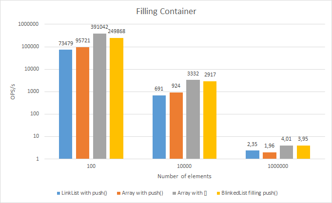
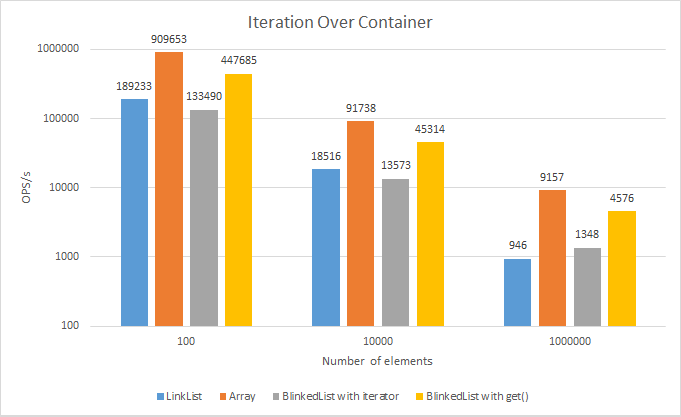
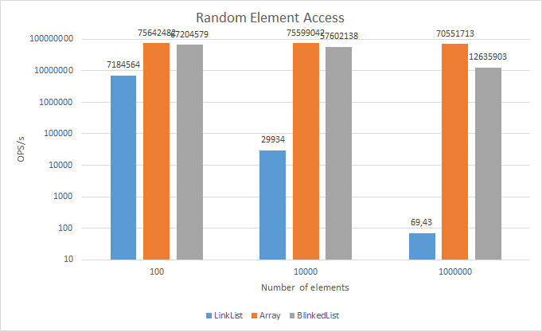
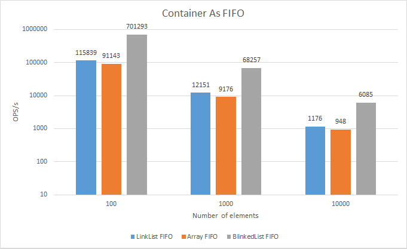
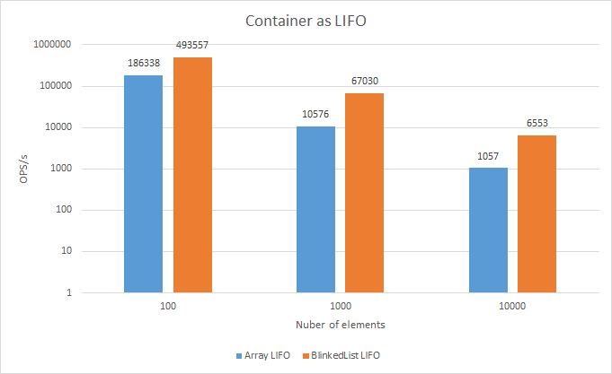

This is the more performant and more generic implementation then the one that is build in NodeJs.
BlinkedList tries to provide the best speed possible while
maintaining wide interface, which allows structures like queues and
stacks to be built on top of it.
The general idea of linked lists is that while slow at random access, they are much more efficient at inserting and deleting items than dynamic arrays. But how does it apply to NodeJs' V8? Well, if you look at the benchmarks below you can see that this is not exactly true, especially for small amounts of data.
No, it doesn't. Arrays are probably the most used structures in JS, so it's no surprise that developers behind every JS engine put a lot of effort into optimizing everything they can around these containers. The only thing we have to remember is that if we want to achieve the highest speeds possible, we have to keep our arrays dense, this means no holes between our indexes. You may ask then
This is actually a good idea, except one issue. We still have to reduce time needed for deleting elements that are clearly visible in FIFO and LIFO benchmarks, where we add and remove elements frequently. And this is where it gets interesting
To achieve this I used virtual structure called circular buffer.
In our array approach it means that index of the first element is not always 0
and can even be higher than the index of the last one. This allows me
to rapidly remove elements from the beginning and the end of the array
without making V8 to reallocate memory. The only trade-of is a little
higher memory consumption, because instead of actually deleting
elements, we set them as undefined.
Lets say we have a BlinkedList with four elements that looks in memory as follows:
|a|b|c|d|
|0|1|2|3|
^Our first element is tagged with an arrow. Now lets shift() the first element:
| |b|c|d|
|0|1|2|3|
^As you can see, we didn't remove the first element, we just marked it
as empty and moved the front pointer. Normally V8 would could remove the
element from memory and recalculate the contents which is relatively
time expensive.
Now lets push() an element to the end of the container:
|e|b|c|d|
|0|1|2|3|
^Again, no expensive memory reallocation, in this simple two step example we avoided two costly operations(yay!).
Using circular buffer requires some calculations, especially, when
accessing certain indexes as those can be higher than actual container
size. There are two things connected with this issue: BlinkedList keeps track of its _capacity property which tells how big the ring is and because we'll have to do a lot of modulo operations the capacity is always the power of 2 to speed it up with bitwise replacement.
These are some benchmarks using:
Windows 8.1
AMD FX 6300 3.79GHz
8GB RAM
--------------------
node@v0.12.2
benchmark.js@1.0.0To run benchmarks please run npm install inside project directory.

Node's LinkList is the slowest, BlinkedList is faster, but a little
slower than array, because of some calculations and API overhead.

Again, array is the fastest. This time BlinkedList iterator is a
little slower than LinkList, but on the other hand it's a lot faster
when using its get() method. It's important to note that LinkList doesn't provide proper API for iterating over container without removing its elements.

Unsurprisingly, Array and BlinkedList are way faster than Node's LinkList.

This and next benchmarks show really well what lists are made for.
This time both are faster than array because of frequent removing and adding elements. BlinkedList is the fastest.

No proper API from Node's LinkList. BlinkedList is faster than array.
The main goal - better performance than Node's LinkList - was successfully achieved with great results.
BlinkedList provides outstanding performance, especially when working with big amounts of data.
Future roadmap could include better unit tests and wider banchmarking.